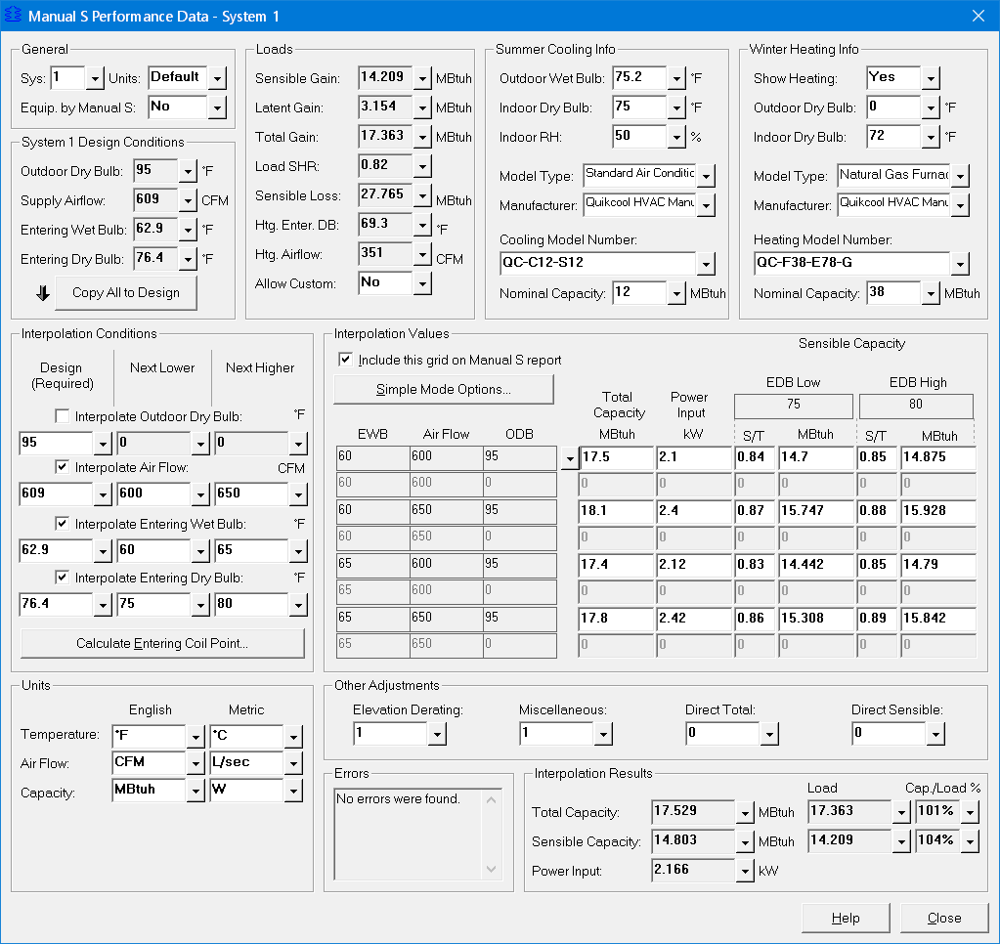

Manual S Performance Data (Project Menu) |
  
|
Manual S Performance Data (Project Menu) |
|
Icon: . Keyboard Shortcut: ALT, P, N
Opens the Manual S Performance Data window, where you can enter manufacturer performance data for your air conditioner or heat pump. This window will perform an interpolation on the data you enter and give you the resulting total capacity, sensible capacity and power input at your design conditions.
Note that you should finish entering all of the rooms in your project before going to this window, since you will need to know what the cooling load of your project is before you can select equipment and then enter the performance data for the equipment you selected.
The values on this window can be printed on the Manual S Performance Data report. If you would like to print the Manual S Performance Data report without entering values on this window, you can manually fill in the following inputs in the grid on the Cooling tab of the Equipment tab on the System Data window: Adjusted Total Capacity (Optional), Adjusted Sensible Capacity (Optional), Adjusted Latent Capacity (Optional). If you do fill in those values manually make sure the sensible plus latent equals the total.
Manual S Performance Data Example 1
Manual S Performance Data Example 2
Manual S Performance Data Example 3
Manual S Performance Data Example 4
Manual S Performance Data Example 5

Sys. No.: Specifies the system number for the performance data you want to enter.
Units: Specifies whether you want to use the same units for the performance data as you selected for your project (Default), or whether you want to change it. This input is provided in case the performance data you receive from the manufacturer happens to not be in the same units in which you entered your project.
This System's Equipment Selected in Accordance with ACCA Manual S: If you have a copy of the Manual S publication from ACCA and you used the procedures in that manual to select your equipment, then select Yes for this input. If you did not use Manual S procedures to select your equipment select No.
Selecting Yes will add text to certain reports that says you selected the equipment according to Manual S. These reports include Room Load Summary, Equipment Data and Manual S Performance Data.
This input serves the same purpose as the Manual S checkbox at the bottom of the Equipment tab of the System Data window.
Outdoor Dry Bulb, Supply Airflow, Entering Wet Bulb, Entering Dry Bulb: Displays the values from the current project that are needed for the Design inputs in the Interpolation Conditions frame, below.
Copy All to Design: Copies the values from these inputs into the Design inputs in the Interpolation Conditions frame, below.
Sensible Gain, Latent Gain, Total Gain, Sensible Loss, Heating Entering Dry Bulb, Heating Airflow: If the Allow Custom Load input is set to No, these boxes show the total and sensible loads for the current system. If you set Allow Custom Load to Yes you can enter custom values here for total and sensible loads. These values result from the room data you have entered in the current system.
Load SHR: Displays the sensible heat ratio of the total cooling load on the coil, including both supply and return side loads.
Allow Custom: Determines whether to use the load calculation results in the sensible and latent loads inputs or custom user-entered values. Select No if you would like the values shown in this frame to automatically track with the current system's results. Select Yes if you would instead like to enter your own sensible and total load values.
Outdoor Wet Bulb, Indoor Dry Bulb, Indoor RH, Model Type, Manufacturer, Cooling Model Number, Nominal Capacity: Specifies information that is normally entered elsewhere in the program. If you change these values they will be changed in the rest of the program. These inputs are repeated here in order to make it easier to enter everything in the same place if you happen to need only a Manual S analysis and not a full load calculation. To select equipment click the Close button at the bottom of this window, then click the Equipment tab on the System Data window.
Show Heating: Select Yes if you want a section showing the heating data to be included on the Manual S report. If you only want cooling data on that report, select No.
Outdoor Dry Bulb, Indoor Dry Bulb, Indoor RH, Model Type, Manufacturer, Heating Model Number, Nominal Capacity: Specifies information that is normally entered elsewhere in the program. If you change these values they will be changed in the rest of the program. These inputs are repeated here in order to make it easier to enter everything in the same place if you happen to need only a Manual S analysis and not a full load calculation. To select equipment click the Close button at the bottom of this window, then click the Equipment tab on the System Data window.
Outdoor Dry Bulb, Air Flow, Entering Wet Bulb, Entering Dry Bulb checkboxes: Specifies whether the indicated quantity will be included in the interpolation. When you uncheck the box, the associated inputs in the Interpolation Values area will be grayed out.
Design, Next Lower, Next Higher: The Design column specifies the actual design conditions for the current system in the current project for which you want to find interpolation results. Use the Copy All to Design button above to automatically copy the appropriate values into these inputs.
Calculate Entering Coil Point Button: If loads are being calculated in your project, this selection will not be needed. Opens the Entering Coil Condition Calculator window, where you can enter the parameters used to determine the entering cooling coil dry bulb and wet bulb temperatures. Normally, you will only need to click this button if you checked the "Allow Custom" checkbox elsewhere on this window.
Each of the inputs in these rows specifies a value that corresponding to the gray EWB, Air Flow and ODB inputs directly to the left.
Include this grid on the Manual S report: If this box is checked, when you print the Manual S Performance Data report the values you enter in these boxes will be included on the report.
Simple Mode Options Button: Opens the Simple Mode window, where you can set the Manual S inputs to Simple Mode.
Total Capacity: Specifies the sensible plus latent capacity of the unit at the indicated condition.
Power Input: Specifies the power input of the unit at the indicated condition. These inputs are not required if you only want to get interpolation results for the capacity.
S/T EDB Low, S/T EDB High: Specifies the sensible to total ratio of the unit at the indicated condition. Some manufacturers publish the sensible capacity values and some specify only the total capacity and then the sensible to total ratio. You can enter either one and the other will be filled in automatically as you type.
Sensible Capacity: Specifies the sensible capacity of the unit at the indicated condition. Some manufacturers publish the sensible capacity values and some specify only the total capacity and then the sensible to total ratio. You can enter either one and the other will be filled in automatically as you type.
Temperature, Air Flow, Capacity (English, Metric): Specifies the kind of units you want to see and display on this window. The inputs in the English column only apply if the units for this window are English (see the help for the Units input, above). The same applies to the inputs in the Metric column.
Elevation Derating: Specifies any manufacturer supplied elevation derating factor you want to apply to the results. The total and sensible capacities in the Interpolation Results area will be multiplied by the value you enter here.
Miscellaneous: Specifies any additional derating factor supplied by the manufacturer that you want to be applied to the results. The total and sensible capacities in the Interpolation Results area will be multiplied by the value you enter here.
Direct Total: If the manufacturer provides a direct capacity adjustment you can enter it here. The value may be positive or negative. To reduce the capacity enter a negative number; to increase capacity enter a postive number. The value you enter here will be added to the final result and will be reflected in the Total Capacity and Sensible Capacity boxes below this input.
Direct Sensible: If the manufacturer provides a direct adjustment to the sensible capacity, you can enter it here. The value may be positive or negative. To reduce the capacity enter a negative number; to increase capacity enter a positive number. The value you enter here will be used to adjust the sensible capacity and the latent capacity, while the total capacity will remain the same. If sensible goes up, latent goes down, and vice-versa.
Some manufacturers, such as Carrier, provide this kind of adjustment as a formula where you determine how much sensible capacity to add or subtract based on the number of degrees you are away from a given indoor dry bulb temperature, as well as what the supply airflow is.
Total Capacity, Sensible Capacity: These boxes show the interpolated results from the values you entered in the capacity columns above.
Power Input: Shows the interpolated result of the values you entered above in the Power Input column.
Load: If the Allow Custom Load input is set to No these boxes show the total and sensible loads for the current system. If you set Allow Custom Load to Yes these boxes show the sensible and total loads that you have entered at the top of this window.
Cap/Load: Shows the capacity to load ratio expressed as a percentage. Manual S has guidelines about how much oversizing is allowed for cooling equipment under various circumstances.